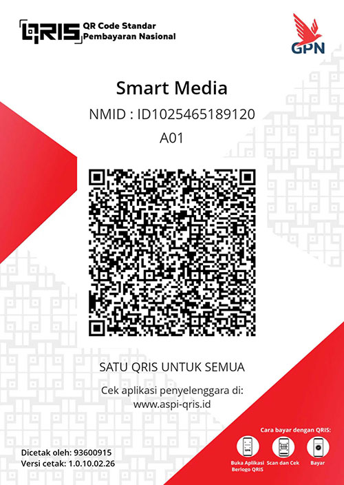

Terimakasih, sudah mengunjungi halaman ini. Niat Bapak/Ibu untuk berdonasi semoga menjadi kebaikan bagi Bapak/Ibu dan keluarga. Senantiasa Allah SWT menjadikan Al-Qur'an menjadi rahmat bagi Bapak/Ibu beserta keluarga. Amin.
Donasi yang masuk akan kami jadikan pengembangan Al-Qur'an Digital ini, dan sebagian akan kami sisihkan untuk Yatim / Fakir Miskin.
Silahkan Scan QRIS ini, berapapun yang Bapak/Ibu berikan sangat berarti bagi kami.
Apabila berkenan, sebagai data kami setelah berdonasi Bapak/Ibu srenshoot ke kami, kirim nomor WA : 085179994600
مَثَلُ الَّذِيْنَ يُنْفِقُوْنَ اَمْوَالَهُمْ فِيْ سَبِيْلِ اللّٰهِ كَمَثَلِ حَبَّةٍ اَنْۢبَتَتْ سَبْعَ سَنَابِلَ فِيْ كُلِّ سُنْۢبُلَةٍ مِّائَةُ حَبَّةٍۗ وَاللّٰهُ يُضٰعِفُ لِمَنْ يَّشَاۤءُۗ وَاللّٰهُ وَاسِعٌ عَلِيْمٌ
"Perumpamaan orang-orang yang menginfakkan hartanya di jalan Allah adalah seperti (orang-orang yang menabur) sebutir biji (benih) yang menumbuhkan tujuh tangkai, pada setiap tangkai ada seratus biji. Allah melipatgandakan (pahala) bagi siapa yang Dia kehendaki. Allah Mahaluas lagi Maha Mengetahui."
(QS. Al-Baqarah : 261)
Jazakumullah ahsanal jaza.
Smart Media